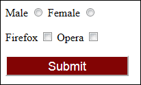
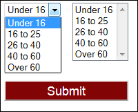

Option Buttons, Check Boxes, List Boxes
Option Buttons
Option buttons are sometimes called Radio Buttons, and they force the user
into choosing only one item in a list, such as a Male/Female option, or selecting
a payment method.
The Option button HTML look like this:
<INPUT TYPE="Radio" Name="Gender"
Value="Male">Male
<INPUT TYPE="Radio" Name="Gender" Value="Female">Female
After typing the INPUT tag, the word TYPE comes next. For Option Buttons, the type is "Radio". The NAME is definitely needed here, and note that the NAME for both in our code above is "Gender". You use the same name for each group of option buttons you are adding to your form. So if you wanted payment option buttons, the code might be this:
<INPUT TYPE="Radio" Name="payment"
Value="CC">Credit Card
<INPUT TYPE="Radio" Name="payment" Value="DC">Debit
Card
<INPUT TYPE="Radio" Name="payment" Value="PP">PayPal
This time, each radio button has the name "payment". The reason you keep the same name for each group of option buttons is simply to distinguish one group of option buttons from another.
The VALUE attribute is quite useful. When the user submits the form to you using the Submit button, these VALUES are going to be returned. If you've just got Radio1 and Radio2, you won't know (or won't remember, more likely) which option the user has selected. Manipulating values with scripts is also a lot easier if the Value is the same as the text the user sees.
If you want to have a default option button selected, use the word "Checked":
<INPUT TYPE="Radio" Name="payment"
Value="CC">Credit Card
<INPUT TYPE="Radio" Name="payment" Value="DC">Debit
Card
<INPUT TYPE="Radio" Name="payment" Value="PP"
Checked>PayPal
Attaching a label to each button is very useful for your visitors. When the label is clicked it will select the option button it is named for:
<LABEL FOR="R1">Male</LABEL>
<INPUT TYPE="Radio" Name="Gender" ID="R1"
Value="Male">
<LABEL FOR="R2">Female</LABEL>
<INPUT TYPE="Radio" Name="Gender" ID="R2"
Value="Female">
In the code above, the labels are FOR the form elements called R1 and R2. We have added a corresponding ID to each option button. Notice, too, that we've deleted the text from after the > of each option button. The "Male" and "Female" text is now between the two label tags.
Check Boxes
Check boxes are used to give your users the opportunity to select more than one option from a range of options. With the Radio Buttons, you could only select one item; with check boxes, you can select them all.
The HTML for check boxes looks like this:
<INPUT TYPE="Checkbox" Name="Browser"
Value ="Firefox">Firefox
<INPUT TYPE="Checkbox" Name= "Browser" Value ="Opera
">Opera
Again, you can add a label to aid in selection:
<LABEL FOR="C1">Firefox</LABEL>
<INPUT TYPE="Checkbox" Name="Browser" ID="C1"
Value="Firefox">
<LABEL FOR="C2"> Opera </LABEL>
<INPUT TYPE="Checkbox" Name="Browser" ID="C2"
Value="Opera">
Check boxes and Radio buttons work in a similar way, and the HTML code is similar, too. The same points made about Radio buttons apply to check boxes. Note the TYPE used, though: Checkbox.
The above code for option buttons and checkboxes would look like this in the browser:

List Boxes
You can have a list box of items on your forms, either in a drop down format or as a fixed list. Here's what the two look like on a web page:

The HTML code for a dropdown list, the default, is this:
<SELECT>
<OPTION Value="Under 16">Under 16</OPTION>
<OPTION Value="16 to 25">16 to 25</OPTION>
<OPTION Value="26 to 40">26 to 40</OPTION>
<OPTION Value="40 to 60">40 to 60</OPTION>
<OPTION Value="Over 60">Over 60</OPTION>
</SELECT>
List boxes are called Select boxes in HTML and use the <SELECT> tag to set them up.
Each item in your list needs an OPTION tag.
<OPTION Value="Under 16">Under 16</OPTION>
You don't need the closing OPTION tag, if you don't want it, but it is here for the sake of neatness. The text you want to appear in the list, the text that people see and click on, goes after the first right pointy bracket (>). The Value is not strictly needed, either. When the form is submitted, the option the user selected will be returned to you. If the Value attribute is missing, the text itself will be returned.
If you want one of the items in your list selected by default, just choose the item and add SELECTED as an attribute. Like this:
<OPTION Value="Under 16" SELECTED>Under 16
The only difference between the drop down list and the Fixed list is one attribute in the <SELECT> tag: SIZE.
<SELECT SIZE="5">
The SIZE is the number of item in your list. If you add this attribute, you'll get a Fixed list instead of a drop down list.
If you want your users to be able to choose more than one item from the list, the attribute to add to the SELECT tag is MULTIPLE
<SELECT SIZE="5" MULTIPLE>
A user can then hold down the CTRL key and click to select more than one item.
You can add CSS styles to your list boxes, of course. Here's a style that sets font properties using the HTML selector:
SELECT {
font-family: Arial, Helvetica, sans-serif;
font-size: 18px;
}
Now everything with the HTML SELECT tag will have its font and font size changed.
In the next lessons, you'll see how to add passwords, and also something called a Hidden form element.